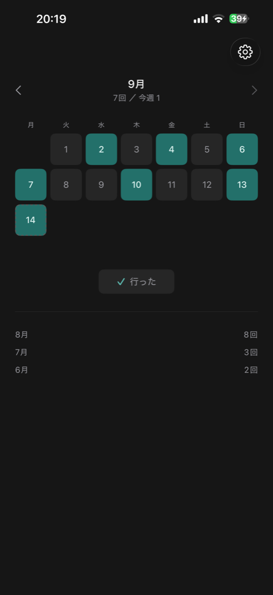
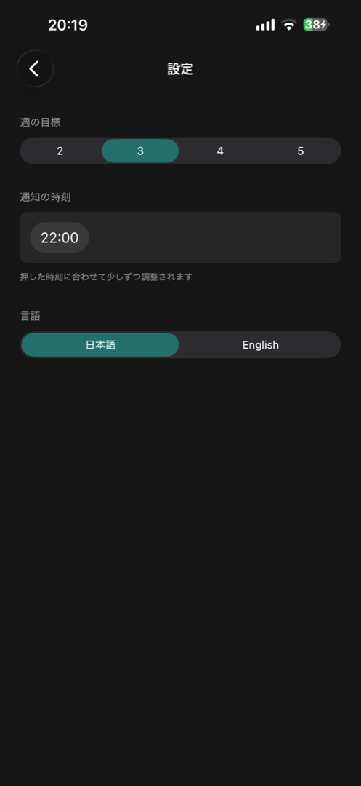

Gym Rhythm logs the days you went to the gym from a notification. Long-press it, tap Went, and you are done. There is no need to open the app.
iPhone · iOS 18 or later
English / 日本語
It asks whether you went to the gym today, with the number of visits this week and your weekly goal.
Tap Went or Didn't go, and the day is logged. The app stays closed.
You can see this month and this week at a glance, along with the totals for previous months.


If the app's Settings screen shows "Notifications are off", tap Open Settings and allow notifications in iOS Settings. Notifications are also hidden while a Focus mode is on.
Days change at midnight. If you answer an evening notification after midnight, the entry is still saved for the day the notification arrived.
Only on your device. There are no accounts and no cloud sync. When you switch to a new iPhone, restoring from an iPhone backup may carry your records over.
Tap any date on the calendar to set it to Went or Didn't go. Tapping the same choice again clears the entry.
It moves slowly toward the time you usually answer the notification. You can set it back to any time in Settings.
Effective date: September 14, 2026
Gym Rhythm ("the app") does not collect your personal information or data.
The app does not collect or transmit any information about you. It does not communicate with external servers, and it has no accounts, ads, analytics, or tracking.
To work, the app stores the following only on your device. It is never sent to the developer or any third party.
This information may be included in your iPhone backups (such as iCloud Backup), which are handled under Apple's privacy policy.
The app uses local notifications scheduled on your device to ask about your day. You can change notification permission at any time in iOS Settings.
Deleting the app from your device removes all entries and settings stored on it.
If this policy changes, the update will be posted on this page.
For questions about this policy, please use the contact below.
To report a problem or ask a question, please open an issue on GitHub.